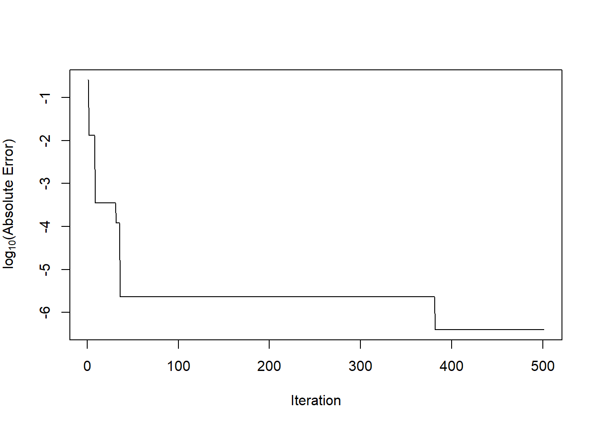

6.3 Rejection Sampling
What do we do if we want to generate samples of a random variable with density \(f\) and there isn’t a built in function for doing this? If the random variable is of a reasonably low dimension (less than \(10\)?), then rejection sampling is a plausible general approach.
The idea of rejection sampling is that although we cannot easily sample from \(f\), there exists another density \(g\), like a Normal distribution or perhaps a \(t\)-distribution, from which it is easy for us to sample (because there’s a built in function or someone else wrote a nice function). Then we can sample from \(g\) directly and then “reject” the samples in a strategic way to make the resulting “non-rejected” samples look like they came from \(f\). The density \(g\) will be referred to as the “candidate density” and \(f\) will be the “target density”.
In order to use the rejections sampling algorithm, we must first ensure that the support of \(f\) is a subset of the support of \(g\). If \(\mathcal{X}_f\) is the support of \(f\) and \(\mathcal{X}_g\) is the support of \(g\), then we must have \(\mathcal{X}_f\subset\mathcal{X}_g\). This makes sense: if there’s a region of the support of \(f\) that \(g\) can never touch, then that area will never get sampled. In addition, we must assume that \[ c = \sup_{x\in\mathcal{X}_f} \frac{f(x)}{g(x)} < \infty \] and that we can calculate \(c\). The easiest way to satisfy this assumption is to make sure that \(g\) has heavier tails than \(f\). We cannot have that \(g\) decreases at a faster rate than \(f\) in the tails or else rejection sampling will not work.
6.3.1 The Algorithm
The rejection sampling algorithm for drawing a sample from the target density \(f\) is then
Simulate \(U\sim\text{Unif}(0, 1)\).
Simulate a candidate \(X\sim g\) from the candidate density
If \[ U\leq\frac{f(X)}{c\,g(X)} \] then “accept” the candidate \(X\). Otherwise, “reject” \(X\) and go back to the beginning.
The algorithm can be repeated until the desired number of samples from the target density \(f\) has been accepted.
As a simple example, suppose we wanted to generate samples from a \(\mathcal{N}(0, 1)\) density. We could use the \(t_2\) distribution as our candidate density as it has heavier tails than the Normal. Plotting those two densities, along with a sample from the \(t_2\) density gives us the picture below.
set.seed(2017-12-4)
curve(dnorm(x), -6, 6, xlab = "x", ylab = "Density", n = 200)
curve(dt(x, 2), -6, 6, add = TRUE, col = 4, n = 200)
legend("topright", c("Normal density", "t density"),
col = c(1, 4), bty = "n", lty = 1)
x <- rt(200, 2)
rug(x, col = 4)Given what we know about the standard Normal density, most of the samples should be between \(-3\) and \(+3\), except perhaps in very large samples (this is a sample of size 200). From the picture, there are samples in the range of \(4\)–\(6\). In order to transform the \(t_2\) samples into \(\mathcal{N}(0, 1)\) samples, we will need to reject many of the samples out in the tail. On the other hand, there are two few samples in the range of \([-2, 2]\) and so we will have to disproportionaly accept samples in that range until it represents the proper \(\mathcal{N}(0, 1)\) density.
Before we move on, it’s worth noting that the rejection sampling method requires that we can evaluate the target density \(f\). That is how we compute the rejection/acceptance ratio in Step 2. In most cases, this will not be a problem.
6.3.2 Properties of Rejection Sampling
One property of the rejection sampling algorithm is that the number of draws we need to take from the candidate density \(g\) before we accept a candidate is a geometric random variable with success probability \(1 / c\). We can think of the decision to accept or reject a candidate as a sequence of iid coin flips that has a specific probability of coming up “heads” (i.e. being accepted). That probability is \(1/c\) and we can calculate that as follows.
\[\begin{eqnarray*} \mathbb{P}(X~\text{accepted}) & = & \mathbb{P}\left(U\leq\frac{f(X)}{c\,g(X)}\right)\\ & = & \int \mathbb{P}\left(\left.U\leq\frac{f(x)}{c\,g(x)}\right| X = x\right)g(x)\,dx\\ & = & \int \frac{f(x)}{c\,g(x)} g(x)\,dx\\ & = & \frac{1}{c} \end{eqnarray*}\]This property of rejection sampling has implications for how we choose the candidate density \(g\). In theory, any density can be chosen as the candidate as long as its support includes the support of \(f\). However, in practice we will want to choose \(g\) so that it matches \(f\) as closely as possible. As a rule of thumb, candidates \(g\) that match \(f\) closely will have smaller values of \(c\) and thus will accept candidates with higher probability. We want to avoid large values of \(c\) because large values of \(c\) lead to an algorithm that rejects a lot of candidates and has lower efficiency.
In the example above with the Normal distribution and the \(t_2\) distribution, the ratio \(f(x)/g(x)\) was maximized at \(x=1\) (or \(x=-1\)) and so the value of \(c\) for that setup was 1.257, which implies an acceptance probability of about 0.8. Suppose however, that we wanted to simulate from a Uniform\((0,1)\) density and we used an Exponential\((1)\) as our candidate density. The plot of the two densities looks as follows.
curve(dexp(x, 1), 0, 1, col = 4, ylab = "Density")
segments(0, 1, 1, 1)
legend("bottomleft", c("f(x) Uniform", "g(x) Exponential"), lty = 1, col = c(1, 4), bty = "n")Here, the ratio of \(f(x)/g(x)\) is maximized at \(x=1\) and so the value of \(c\) is 2.718 which implies an acceptance probablity of about 0.37. While running the rejection sampling algorithm in this way to produce Uniform random variables will still work, it will be very inefficient.
We can now show that the distribution of the accepted values from the rejection sampling algorithm above follows the target density \(f\). We can do this by calculating the distribution function of the accepted values and show that this is equal to \(F(t) = \int_{-\infty}^t f(x)\, dx\).
\[\begin{eqnarray*} \mathbb{P}(X\leq t\mid X~\text{accepted}) & = & \frac{\mathbb{P}(X\leq t, X~\text{accepted})}{\mathbb{P}(X~\text{accepted})}\\ & = & \frac{\mathbb{P}(X\leq t, X~\text{accepted})}{1/c}\\ & = & c\, \mathbb{E}_g \mathbb{E}\left[ \left.\mathbf{1}\{x\leq t\}\mathbf{1}\left\{U\leq\frac{f(x)}{c\,g(x)}\right\}\right| X=x \right]\\ & = & c\, \mathbb{E}_g\left[\mathbf{1}\{X\leq t\} \mathbb{E}\left[ \left.\mathbf{1}\left\{U\leq\frac{f(x)}{c\,g(x)}\right\}\right| X=x \right]\right]\\ & = & c\, \mathbb{E}_g\left[ \mathbf{1}\{X\leq t\}\frac{f(X)}{c\,g(X)} \right]\\ & = & \int_{-\infty}^{\infty} \mathbf{1}\{x\leq t\} \frac{f(x)}{g(x)}g(x)\,dx\\ & = & \int_{-\infty}^t f(x)\,dx\\ & = & F(t) \end{eqnarray*}\]This shows that the distribution function of the candidate values, given that they are accepted, is equal to the distribution function corresponding to the target density.
A few further notes:
We only need to know \(f\) and \(g\) up to a constant of proportionality. In many applications we will not know the normalizing constant for these densities, but we do not need them. That is, if \(f(x) = k_1 f^\star(x)\) and \(g(x) = k_2 g^\star(x)\), we can proceed with the algorithm using \(f^\star\) and \(g^\star\) even if we do not know the values of \(k_1\) and \(k_2\).
Any number \(c^\prime \geq c\) will work in the rejection sampling algorithm, but the algorithm will be less efficient.
Throughout the algorithm, operations can (and should!) be done on a log scale.
The higher the dimension of \(f\) and \(g\), the less efficient the rejection sampling algorithm will be.
Whether \(c=\infty\) or not depends on the tail behavior of the the densities \(f\) and \(g\). If \(g(x)\downarrow 0\) faster than \(f(x)\downarrow 0\) as \(x\rightarrow\infty\), then \(f(x)/g(x)\uparrow\infty\).
6.3.3 Empirical Supremum Rejection Sampling
What if we cannot calculate \(c = \sup_{x\in\mathcal{X}_f} \frac{f(x)}{g(x)}\) or are simply too lazy to do so? Fear not, because it turns out we almost never have to do so. A slight modification of the standard rejection sampling algorithm will allow us to estimate \(c\) while also sampling from the target density \(f\). The tradeoff (there is always a tradeoff!) is that we must make a more stringent assumption about \(c\), mainly that it is achievable. That is, there exists some value \(x_c\in\mathcal{X}_f\) such that \(\frac{f(x_c)}{g(x_c)}\) is equal to \(\sup_{x\in\mathcal{X}_f} \frac{f(x)}{g(x)}\).
The modified algorithm is the empirical supremum rejection sampling algorithm of Caffo, Booth, and Davison. The algorithm goes as follows. First we must choose some starting value of \(c\), call it \(\hat{c}\), such that \(\hat{c}> 1\). Then,
Draw \(U\sim\text{Unif}(0, 1)\).
Draw \(X\sim g\), the candidate density.
Accept \(X\) if \(U\leq\frac{f(X)}{\hat{c}\,g(X)}\), otherwise reject \(X\).
Let \(\hat{c}^\star = \max\left\{\hat{c}, \frac{f(X)}{g(X)}\right\}\).
Update \(\hat{c} = \hat{c}^\star\).
Goto Step 1.
From the algorithm we can see that at each iteration, we get more information about the ratio \(f(X)/g(X)\) and can update our estimate of \(c\) accordingly.
One way to think of this algorithm is to conceptualize a separate sequence \(\tilde{Y}_i\), which is \(0\) or \(1\) depending on whether \(X_i\) should be rejected (\(0\)) or accepted (\(1\)). This sequence \(\tilde{Y}_i\) is the accept/reject determination sequence. Under the standard rejection sampling algorithm, the sequence \(\tilde{Y}_i\) is generated using the true value of \(c\). Under the emprical supremum rejection sampling (ESUP) scheme, we generate a slightly different sequence \(Y_i\) using our continuously updated value of \(\hat{c}\).
If we drew values \(X_1, X_2, X_3, X_4, X_5, X_6,\dots\) from the candidate density \(g\), then we could visualize the acceptance/rejection process as it might occur using the true value of \(c\) and our estimate \(\hat{c}\).

Empirical supremum rejection sampling scheme.
Following the diagram above, we can see that using the estimate \(\hat{c}\), there are two instances where we accept a value when we should have rejected it (\(X_1\) and \(X_4\)). In every other instance in the sequence, the value of \(Y_i\) was equal to \(\tilde{Y}_i\). The theory behind the ESUP algorithm is that eventually, the sequence \(Y_i\) becomes identical to the sequence \(\tilde{Y}_i\) and therefore we will accept/reject candidates in the same manner as we would have if we had used the true \(c\).
If \(f\) and \(g\) are discrete distributions, then the proof of the ESUP algorithm is fairly straightforward. Specifically, Caffo, Booth, and Davison showed that \(\mathbb{P}(Y_i \ne \tilde{Y}_i~\text{infinitely often}) = 0\). Recall that by assumption, there exists some \(x_c\in\mathcal{X}_f\) such that \(c = \frac{f(x_c)}{g(x_c)}\). Therefore, as we independently sample candidates from \(g\), at some point, we will sample the value \(x_c\), in which case we will achieve the value \(c\). Once that happens, we are then using the standard rejection sampling algorithm and our estimate \(\hat{c}\) never changes.
Let \(\gamma = \min_i\{ x_i = x_c\}\), where \(x_i\sim g\). So \(\gamma\) is the first time that we see the value \(x_c\) as we are sampling candidates \(x_i\) from \(g\). The probability that we sample \(x_c\) is \(g(x_c)\) (recall that \(g\) is assumed to be discrete here) and so \(\gamma\) has a Geometric distribution with success probability \(g(x_c)\). Once we observe \(x_c\), the ESUP algorithm and the standard rejection sampling algorithms converge and are identical.
From here, we can use the coupling inequality, which tells us that \[ \mathbb{P}(Y_i\ne\tilde{Y}_i) \leq \mathbb{P}(\gamma\geq i). \] Given that \(\gamma\sim\text{Geometric}(g(x_c))\), we know that \[ \mathbb{P}(\gamma\geq i) = (1-g(x_c))^{i-1}. \] This then implies that \[ \sum_{i=1}^\infty \mathbb{P}(Y_i\ne\tilde{Y}_i) < \infty \] which, by the Borel-Cantelli lemma, implies that \(\mathbb{P}(Y_i \ne \tilde{Y}_i~\text{infinitely often}) = 0\). Therefore, eventually the sequences \(Y_i\) and \(\tilde{Y}_i\) must converge and at that point the ESUP algorithm will be identical to the rejection sampling algorithm.
In practice, we will know know exactly when the ESUP algorithm has converged to the standard rejection sampling algorithm. However, Caffo, and Davison report that the convergence is generally fast. Therefore, a reasonable approach might be to discard the first several accepted values (e.g. a “burn in”) and then use the remaining values.
We can see how quickly ESUP converges in a simple example where the target density is the standard Normal and the candidate density is the \(t_2\) distribution. Here we simulate 1,000 draws and start with a value \(\hat{c}=1.0001\). Note that in the code below, all of the computations are done on the log scale for the sake of numerical stability.
set.seed(2017-12-04)
N <- 500
y_tilde <- numeric(N) ## Binary accept/reject for "true" algorithm
y <- numeric(N) ## Binary accept/reject for ESUP
log_c_true <- dnorm(1, log = TRUE) - dt(1, 2, log = TRUE)
log_chat <- numeric(N + 1)
log_chat[1] <- log(1.0001) ## Starting c value
for(i in seq_len(N)) {
u <- runif(1)
x <- rt(1, 2)
r_true <- dnorm(x, log = TRUE) - dt(x, 2, log = TRUE) - log_c_true
rhat <- dnorm(x, log = TRUE) - dt(x, 2, log = TRUE) - log_chat[i]
y_tilde[i] <- log(u) <= r_true
y[i] <- log(u) <= rhat
log_chat[i+1] <- max(log_chat[i],
dnorm(x, log = TRUE) - dt(x, 2, log = TRUE))
}Now we can plot \(\log_{10}(|\hat{c}-c|)\) for each iteration to see how the magnitude of the error changes with each iteration.
c_true <- exp(log_c_true)
chat <- exp(log_chat)
plot(log10(abs(chat - c_true)), type = "l",
xlab = "Iteration", ylab = expression(paste(log[10], "(Absolute Error)")))
We can see that by iteration 40 or so, \(\hat{c}\) and \(c\) differ only in the 5th decimal place and beyond. By the 380th iteration, they differ only beyond the 6th decimal place.